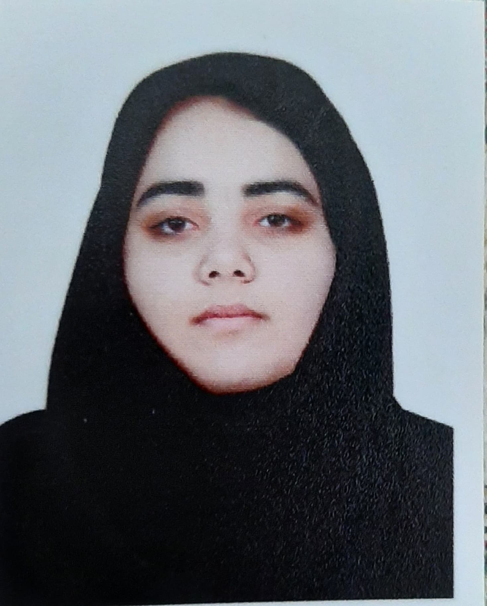

کارشناسی مهندسی کامپیوتر - نرمافزار
دانشگاه رفاه
تا
معدل: ۱۵٫۱۸ از ۲۰

فارغالتحصیل مهندسی کامپیوتر و دانشجوی کارشناسی ارشد هوش مصنوعی و رباتیک.
من در رشته مهندسی کامپیوتر، گرایش نرمافزار، تحصیل کردهام و در حال حاضر دانشجوی کارشناسی ارشد هوش مصنوعی و رباتیک هستم. به هوش مصنوعی، یادگیری ماشین، برنامهنویسی و توسعه وب علاقه دارم و با انجام پروژههای دانشگاهی و شخصی مهارتهایم را بیشتر میکنم.
دانشگاه رفاه
تا
معدل: ۱۵٫۱۸ از ۲۰
دانشگاه جامع انقلاب اسلامی
از تا اکنون
پروژهای دانشگاهی برای معرفی و تبادل کتاب بین دانشجویان.
پروژهای با استفاده از یادگیری ماشین برای پیشبینی احتمال ترک خدمات بانکی توسط مشتریان.
پروژهای برای ترجمه مقالهها با کمک هوش مصنوعی.
پروژهای یادگیری ماشین برای پیشبینی احتمال بیماری قلبی با استفاده از دادههای بیماران.
پروژهای برای بررسی تصاویر جعلی با استفاده از شبکه عصبی کانولوشنی و تحلیل سطح خطا.
تجربه من تاکنون از تمرینهای دانشگاهی، پروژههای هوش مصنوعی و یادگیری ماشین و پروژههای شخصی به دست آمده است. در حال ادامه یادگیری برنامهنویسی و توسعه وب هستم.
ایمیل: zsy.1414@gmail.com
گیتهاب: [لینک گیتهاب]
لینکدین: [لینک لینکدین]